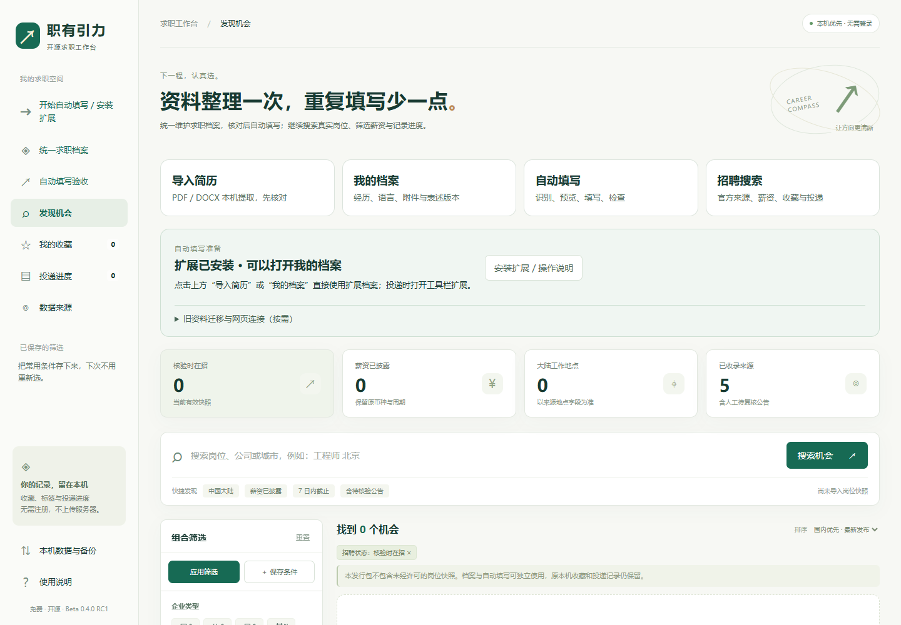
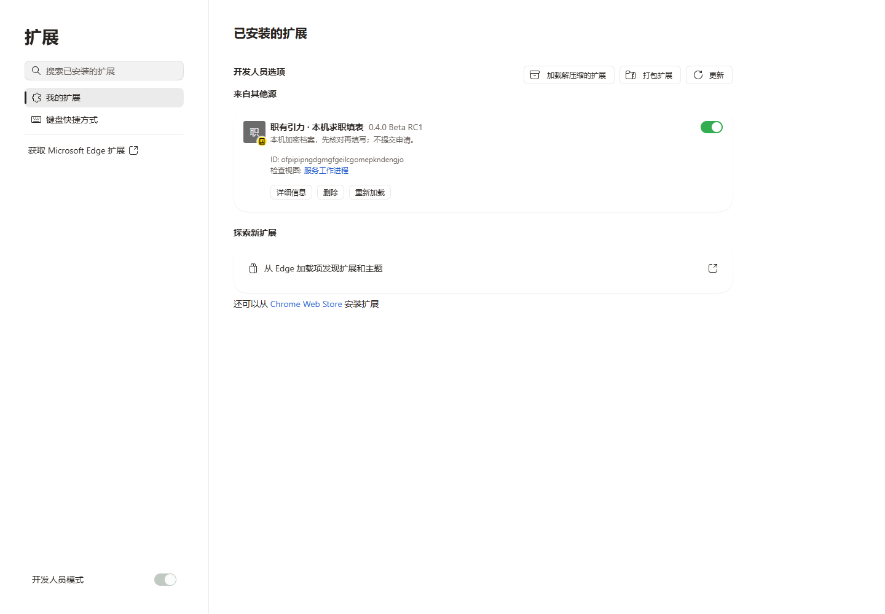
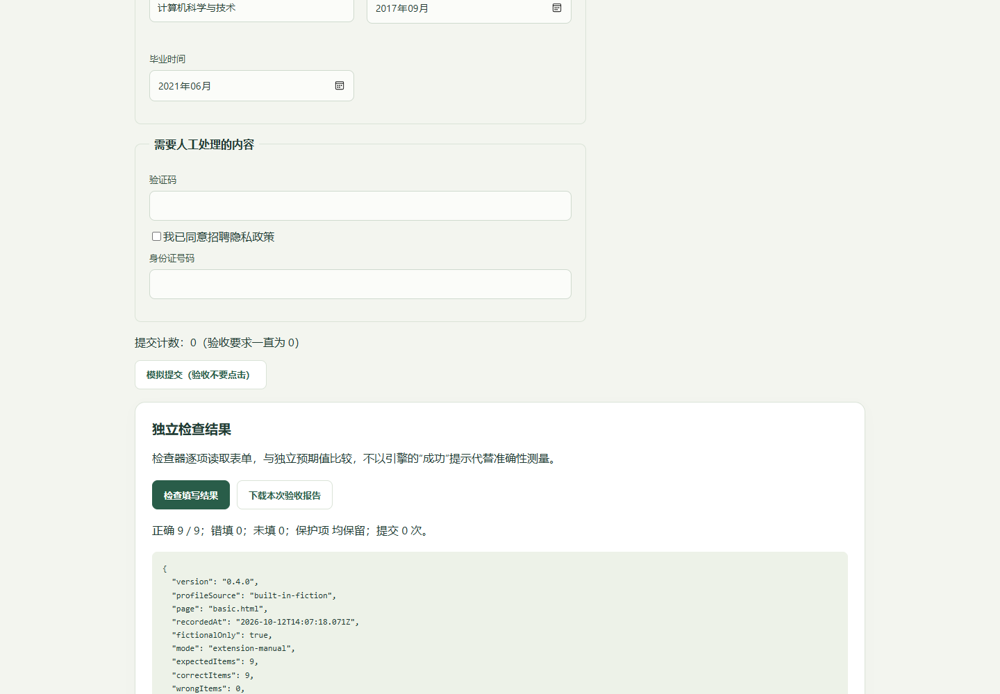

整理一次资料，以后从工具栏填写
职有引力 0.4.0 Beta RC1。免费、本机处理，无需账号或付费API。下面的截图来自真实软件与虚构资料。
1. 双击启动
- 把整个Windows ZIP全部解压到固定、可写的文件夹，不能只取出EXE。
- 双击开始使用.exe，浏览器打开本机首页。首页有“导入简历、我的档案、自动填写、招聘搜索”。不需要任何开发命令。
- 点击“安装扩展 / 操作说明”，点击“复制安装目录”。软件会显示当前发行文件夹内真正的extension目录。
如果提示端口被占用，请先用那个版本自己的停止器。自制启动器未签名，Windows可能要求你确认来源；其他电脑还需安装验收。

2. 在日常Edge安装扩展一次
- Edge地址栏输入
edge://extensions，按回车，清空左侧搜索。 - 打开左下“开发人员模式”，点击上方“加载解压缩的扩展”。
- 粘贴刚才复制的安装目录，选择整个extension文件夹，不选ZIP或单个文件。
- 看到“职有引力 · 本机求职填表”（版本0.4.0），保持启用，并在工具栏扩展菜单固定图标。
- 回工作台刷新，显示“扩展已安装 · 可以打开我的档案”即可。不需要再批准网页连接。

3. 导入简历，核对后一次保存
- 首页点击导入简历，直接打开扩展里的档案。首次设置不少于12字符的口令，然后点击导入已有简历，选择DOCX或有文字层的PDF，可多选。
- 检查每段教育、实习、工作、项目、日期、技能、证书和语言。候选显示原文件、行/页和原文，可直接修改。
- 冲突要明确选择保留原值或候选，不会擅自覆盖。性别、生日、政治面貌只取简历明确原文，不猜缺失字段。
- 勾选已核对与必要的身份确认，点击确认导入并加密保存。看到“保存成功”就完成，不需要再点底部保存。
- 以后修改档案时，点击确认并加密保存。工作台入口与扩展使用同一份档案，工具栏直接复用。

想稍后完善时，展开预览底部“高级选项 · 暂不保存”，选择“仅加入草稿，稍后完善”。草稿不能用于填写。闲置5分钟锁定，忘记口令无法找回，请从“备份与恢复”导出加密备份。
4. 打开招聘表单，从工具栏填写
- 由你完成网站登录。点击工具栏职有引力扩展，解锁已保存档案，使用默认基础表述或已有版本。
- 点击识别当前页；有多段经历才点击“准备经历分组”，等页面加载后重新识别。
- 核对预览里的目标字段、来源记录和值。最高学历等汇总项需要明确选择教育记录，歧义项保留人工处理；已有内容默认不覆盖。
- 勾选核对，点击填写已勾选字段。检查“已完成、未保留、跳过、待确认”与网页；失败不能算成功，修正后重扫或重试。
- 下一步、声明、验证码与最终提交由你完成。新步骤重新识别；助手绝不自动最终提交。

招聘网站在输入时就可能读取资料，请先核对目标站点。iframe、Shadow DOM、未知控件、证件、家庭资料、文件自动上传和验证码仍需人工。
有旧资料时：迁移与备份
首页检测到旧离线档案时，会提示先选择来源，避免新建第二份资料。展开“旧资料迁移与网页连接（按需）”，可打开原离线档案，或迁移到扩展。
- 点击“迁移旧资料：连接扩展”，在工具栏扩展核对本机地址，勾选并批准工作台连接。
- 回首页点击“共用这份档案”，先下载加密备份，再明确选择迁移旧档案或使用扩展原档案。不同来源不默认覆盖。
- 迁移完成后，日常直接打开扩展档案。只有在网页编辑共用档案时，刷新页面才需重新批准；授权最长30分钟、可撤销。
收藏、标签、投递记录使用旧版“本机记录备份”；简历使用“加密档案备份”。它们用途不同。端口与浏览器改变后需本人导入，不会自动搬运。附件最多2份、每份512KiB；描述版本只改变本人写入的职责/自我介绍，不虚构经历。
先用虚构资料自行验收
- 从“自动填写”下载林知行完整虚构简历，按第3步导入、核对并保存。不要向企业投递测试资料。
- 打开A表单，勾选“使用已安装的扩展验收”，从工具栏填写，页面“独立检查”应9/9、提交0、保护项未变。
- B英文动态表单准备教育2条，检查18/18。C三步骤按本人点击下一步，第1步将“联系邮址”对应到“个人资料·电子邮箱”，保存本人确认的映射；“编号”留空，最终检查19/19。
- 复杂表单勾选扩展验收，检查DOM、模型与模拟保存值。重复选项、加载超时、回滚场景应跳过、待确认或失败，不能全算成功。
- 修改一处描述并保存后重填，检查新值。事先手写姓名，默认应保留。导出备份、锁定、恢复预览、确认保存，检查原资料没有悄悄覆盖。
- 沈星澄增强DOCX/PDF各有72明确字段及来源、各类经历2条。它与林知行固定检查器不是同一个预期。

真人计时已按你的要求免除。脚本测量1660ms/4785ms不能证明真人节时30%，完整结果见验收报告。
退出、回退与已知限制
双击“停止工作台.exe”只停止本目录启动的服务，不删浏览器资料。回退先停止Beta，再启动旧根目录“开始使用.cmd”；旧0.2.1/0.3.0与冻结包保留，勿同时启用两份扩展。卸载或清理浏览器之前先备份。
招聘搜索、薪资、收藏、标签、投递与备份保留。ZIP不含未经许可的岗位快照；原机研究快照独立保留、日期不重写，过期/待核验不冒充在招。
普通DOCX/文字PDF本机处理。不支持扫描OCR、旧DOC、密码PDF；复杂排版可需人工核对。真实北森、Greenhouse、Ashby等站点完整填写仍待逐站验收，不能据本机模拟宣称全面兼容。Chrome与其他Windows设备仍待实机验证。
查看当前准确安装目录 · 实际验收与限制 · 维护交接